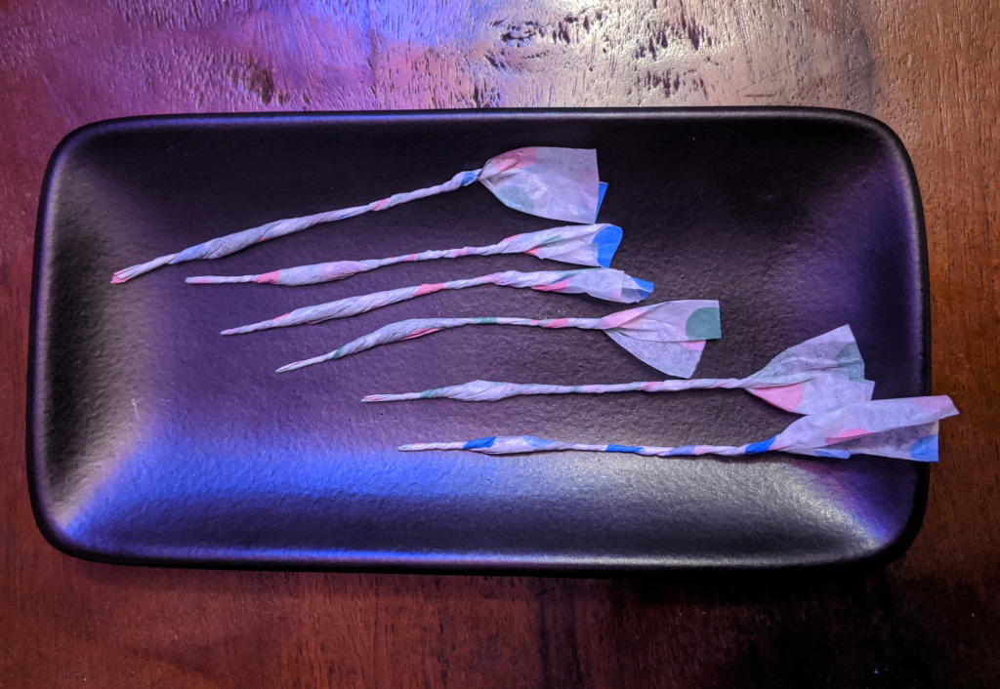
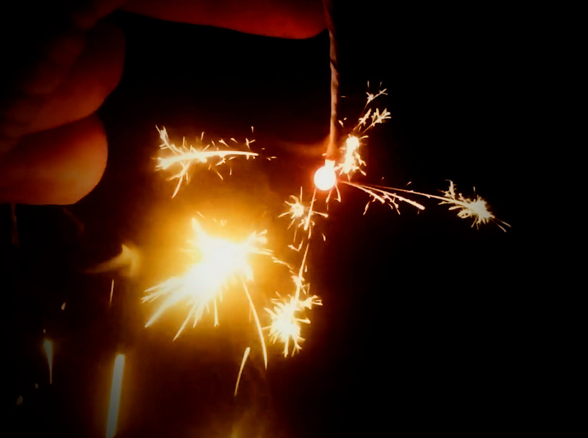

Senko Hanabi
These are a type of handheld sparkler that date back to at least the early 1900's in Japan. Older versions of them were closer in construction to modern western sparklers where a thin stick was coated in a composition and dried. These days they're more often constructed from a small amount of the composition powder tightly rolled in a strip of tissue paper with a long tail of paper functioning as the handle.
The end of the tissue paper near the composition is lit and the flame quickly ignites all of the composition. Then a ball of molton slag forms on the end, believed to be composed of carbon particles trapped in potassium sulfide. As the slag bubbles tiny explosions erupt in all directions forming a quiet and elegant display of fractal branches of sparks.
Composition
The composition of senko hanabi these days is a variant on the typical black powder formula but with a higher sulfur content. The increased sulfur facilitates the formation of the molton potassium sulfide slag that the sparks are emitted from.
- 15 Potassium nitrate
- 4 Charcoal
- 6 Sulfur